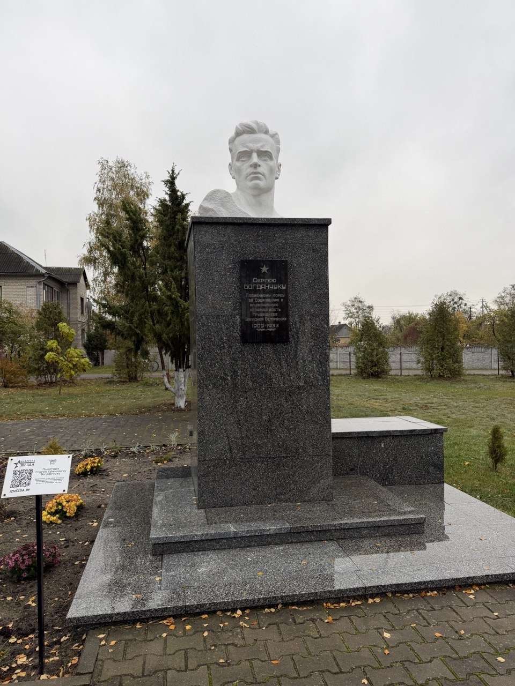

1909 — 1933
Памятник в Мухавце. На гранитном постаменте установлен белый скульптурный бюст, а на лицевой стороне закреплена мемориальная доска.
«Пламенному борцу за социальную и национальную независимость трудящихся Западной Белоруссии»
1909 — 1933Текст и даты приведены по надписи на памятнике.
Ручная реконструкция по фотографиям и видео. Форма бюста и размеры приблизительные; это не точный фотограмметрический скан. Подлинные фотографии доступны в галерее.
